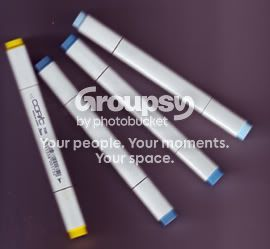

(สมมุติ)
ซื้อเสื้อมาแล้วจะเอากางเกง
บรึ้มมมมมมม เควสสำเร็จ
ได้กุญแจแล้วไขเจอเสื้อ=_=......... OTL !!!
ต้องกลับไปตายอีกรอบ
ซื้อเสื้อมาแล้วจะเอากางเกง
บรึ้มมมมมมม เควสสำเร็จ
ได้กุญแจแล้วไขเจอเสื้อ=_=......... OTL !!!
ต้องกลับไปตายอีกรอบ
http://eco.froztic.in.th/archive/ecofanclub/
http://eco.froztic.in.th/archive/ecofanclub/viewtopic.php?f=21&t=56418
kumacloud เขียน:เพิ่งมาเล่นบอร์ดได้ไม่นาน
มาอ่านทีเดียวแบบคอมโบ
โอว อ่านไปเลือดกำเดาจะกระฉูดเพราะความน่ารัก :oops:
วาดเก่งมากๆเลยค่ะ สัดส่วนไม่เพี้ยนเลย เส้นสวยวาดด้วยดินสอแต่ไม่มีเลอะเทอะเลยอ่ะทึ่งมากๆ
มุกที่เขียนก็นะ ขำทุกหน้าเลยค่ะ
ชอบมุกที่เล่นกะป๊ะป๋ามาก คลาสสิคจริงๆ แต่ก็นะเป็นเหยื่อซะเถอะเพื่อความสุขของคนรัก และลูกๆ อิๆ:twisted:
ว่าแต่ใช้สีอะไรลงคะ สีไม้ สีน้ำหรือโคปิกอ่า ดูไม่ค่อยถนัดถ้าเดาผิดก็ขอโทษน้า
สีสดใสมากแล้วก็ลงได้อยู่ในขอบเป็นระเบียบมากๆเลยค่ะ ถ้าลงด้วยสีน้ำนี่จะบอกว่าเก่ง
โคดๆ เรียบเนียนไม่มีคลื่น
เฮ่อ เห็นแล้วก็ชักอยากจะวาดแฟนอาร์ตขึ้นมาจริงๆซะแล้ว
รัก+เล่น มามากๆแต่แทบไม่ได้วาดรูปเกี่ยวกะเกมเลย(จริงๆก็ไม่ค่อยได้วาดรูปมาตั้งแต่เริ่มเล่นเกมแล้ว55) เหมือนไม่ค่อยมีไฟ
แต่พอได้มาดูครอบครัวแพนเสะที่น้องๆวาดแล้วมันจุดประกาย ปิ๊งๆ ขึ้นมาเลยเชียว>w<
เอาไว้วาดสำเร็จแล้วจะเอามาลงประจานตัวเองให้ดู :cry:
เป็นกำลังใจให้วาดต่อไปค่ะ ยังเด็กๆกันอยู่ยังเก่งได้อีกเยอะเลย>.<b
me / สมัครเป็นแฟนคลับครอบครัวแพนเสะ *-*/
เสียดายเราเล่นทาโกะไม่งั้นคงขอไปเป็นแขกบ้านแพนเสะบ้าง :wink:
N' ปริ้นนน เขียน:สีโคปิกมานคือไรอ่า :oops: :oops: :oops:

Kuren เขียน:N' ปริ้นนน เขียน:สีโคปิกมานคือไรอ่า :oops: :oops: :oops:
ตามความเข้าใจ มันคล้าย ๆ กับสีเมจิค แต่ความเนียนของสีจะดีกว่า
แล้วก็เวลาระบาย ขณะที่สียังไม่แห้งเราสามารถเอาระบายเพื่อเป็นการผสมสี เช่น แดง + ขาว = ชมพู
แต่ถ้าแห้งแล้ว ระบายทับสีจะไม่ผสมกัน เช่น ๆ ระบายแดงลงไป พอแห้งแล้ว เอาขาวทับ ก็จะเป็นสีขาว
แล้วก็มีราคาค่อนข้างแพงพอสมควร
ป.ล. เคยลองซื้อมาใช้ - .- แพงเกิ๊น ~
Kuren เขียน:N' ปริ้นนน เขียน:สีโคปิกมานคือไรอ่า :oops: :oops: :oops:
ตามความเข้าใจ มันคล้าย ๆ กับสีเมจิค แต่ความเนียนของสีจะดีกว่า
แล้วก็เวลาระบาย ขณะที่สียังไม่แห้งเราสามารถเอาระบายเพื่อเป็นการผสมสี เช่น แดง + ขาว = ชมพู
แต่ถ้าแห้งแล้ว ระบายทับสีจะไม่ผสมกัน เช่น ๆ ระบายแดงลงไป พอแห้งแล้ว เอาขาวทับ ก็จะเป็นสีขาว
แล้วก็มีราคาค่อนข้างแพงพอสมควร
ป.ล. เคยลองซื้อมาใช้ - .- แพงเกิ๊น ~